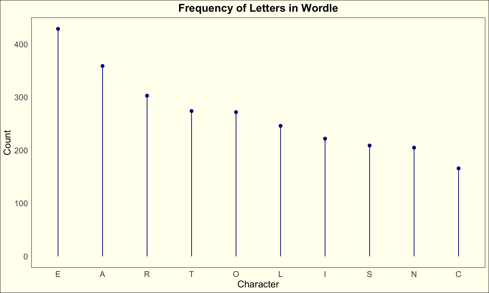
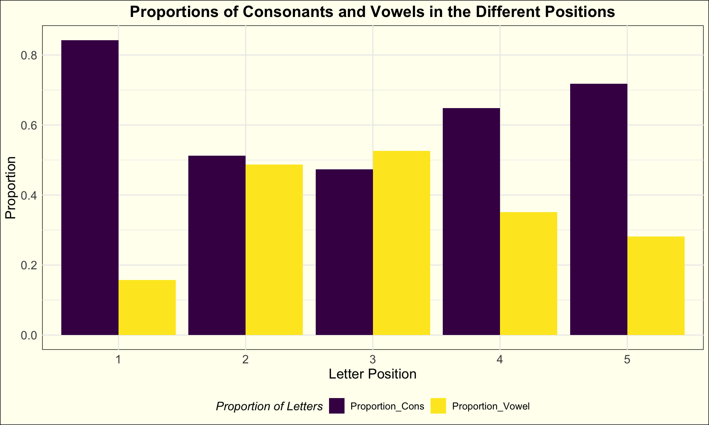
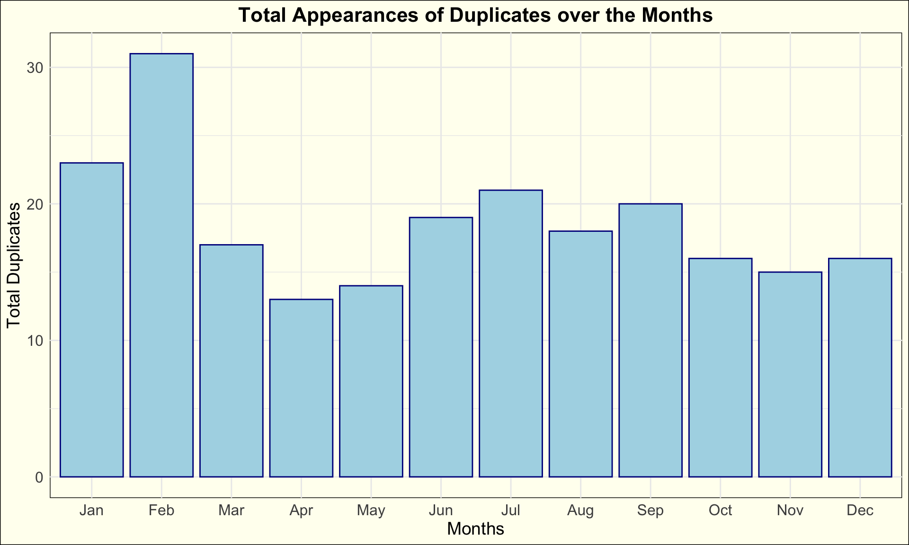

library(tidyverse)
library(here)In the world of wordplay, every letter holds potential.
Introduction
Have you ever found yourself immersed in the delightful challenge of word puzzles? Whether it’s a crossword, a word search, or a game like “Wordle,” there’s something inherently satisfying, super fun, and surprisingly challenging about manipulating words and playing around with letters to find the right word. In a world filled with intense social media distractions and fast-paced lifestyles, ‘Wordle,’ a digital word puzzle game offered by The New York Times, provides a refreshing escape, engaging our minds and igniting our creativity.
As we navigate the complexities of modern life, it’s easy to overlook the simple joys that wordplay can bring. Yet, research suggests that engaging in word puzzles not only provides entertainment but also offers a myriad of cognitive benefits. In this exploration, we delve deeper into the world of “Wordle”,where every letter holds the potential to unlock new possibilities and expand our linguistic horizons.
Instructions
Upon starting the game, players are presented with a blank grid representing the letters of the hidden five-lettered word and a text box for entering their guesses. The objective of the game is to guess the hidden five-letter word correctly within six attempts. As guesses are submitted, the grid fills in with colored squares to provide feedback: green for correct letters in the correct position, yellow for correct letters in the wrong position, and gray for incorrect letters. Players must interpret this feedback to refine their guesses and deduce the hidden word within the six attempts they have.
Word Puzzles: Patterns and Pleasures
Word puzzles have been enjoyed for centuries, transcending cultural boundaries and linguistic differences. From ancient riddles to modern-day games, the appeal of wordplay lies in its ability to challenge and delight players of all ages. “Wordle” extends far beyond a simple puzzle. Because of its popularity, “Wordle” is being played by the majority of the population in the United States. From personal experience, as an international student who migrated to the United States three years ago, ‘Wordle’ has become an essential part of my everyday life and has helped me adapt to the new environment. I found common ground with friends and strangers alike. Numerous relationships in my University career have started with a simple question: “Have you done the Wordle yet?”
The Joy of “Wordle”
“Wordle”, with its simple yet addictive game play, epitomizes the joy of word puzzles. By arranging letters strategically, players can uncover hidden words and rack up points, all while exercising their vocabulary and spatial reasoning skills. In a world where communication is key, mastering the art of wordplay in “Wordle” can be both rewarding and empowering.
URLs:
https://screenrant.com/wordle-answers-updated-word-puzzle-guide/
wordle_df <- read.csv("~/Desktop/Sixth Semester/DS334_Blog/data/wordle.csv") Frequency of Letters
Many people, including myself, often wonder if there’s an “ideal’ or”best” word to get the most information available in their first guess. Therefore, we are going to look at the frequency of the different letters included in the “Worldes”. We are going to focus on the 10 most frequent ones.
wordle_chars_df <- wordle_df |>
mutate(
Word = as.character(Word)) |>
mutate(
across(Word, ~ strsplit(., "", fixed = TRUE))) |>
unnest(
cols = everything()) |>
filter(
Word != " ") |>
mutate(
Count = rep(1:5, length.out = n()))wordle_count_df <-
wordle_chars_df |>
select(
-Date) |>
group_by(
Word) |>
summarise(
Chars_count = n()) |>
arrange(
desc(Chars_count)) |>
slice(1:10) |>
mutate(
Word = as.factor(Word)) |>
mutate(
Word = as.factor(Word)) |>
mutate(
Word = fct_reorder(Word, Chars_count, .desc = TRUE))ggplot(data = wordle_count_df,
mapping = aes(x = Word,
y = Chars_count))+
geom_segment(aes(x = Word, y = 0, yend = Chars_count),
color = "darkblue")+
geom_point(size = 2, color = "darkblue")+
labs(title = "Frequency of Letters in Wordle",
x = "Character",
y = "Count")+
theme_minimal()+
scale_color_viridis_d()+
theme(plot.background = element_rect(fill = "ivory"),
panel.background = element_rect(fill = "ivory"),
plot.title = element_text(size = 16, face = "bold", hjust = 0.5),
axis.title = element_text(size = 14),
axis.text = element_text(size = 12),
panel.grid.major = element_blank(),
panel.grid.minor = element_blank(),
panel.border = element_blank())
Surprisingly, for many, the 10 most frequent letters in the “Wordle” consist of more consonants than vowels. While the two most frequent letters are “A” and “E”, they are followed by two consonants, “R” and “T”.
Positions and Letters
How does the position of letters within the hidden word affect the likelihood of successfully guessing “Wordle”? Is there a higher probability of correctly guessing the word based on the selection of a consonant or vowel in specific positions?
wordle_positions_df <-
wordle_chars_df |>
pivot_wider(
names_from = Count,
values_from = Word) |>
select(-1, -2) |>
pivot_longer(c(1:5),
names_to = "Position",
values_to = "Letter") |>
mutate(
Letter = as.factor(Letter),
Nature = case_when((Letter %in% c(
"B", "C", "D", "F", "G", "H", "J", "K", "L", "M", "N", "P", "Q", "R", "S", "T", "V", "W", "X", "Y", "Z") ~ 1),
.default = 0)
) |>
group_by(
Position) |>
summarise(
Proportion_Cons = mean(Nature)) |>
mutate(
Proportion_Vowel = 1-Proportion_Cons) |>
pivot_longer(c(2, 3),
names_to = "Proportions",
values_to = "Values")ggplot(data = wordle_positions_df, aes(fill=Proportions, y= Values, x=Position)) +
geom_bar(position="dodge", stat="identity")+
labs(title = "Proportions of Consonants and Vowels in the Different Positions",
x = "Letter Position",
y = "Proportion",
fill = "Proportion of Letters")+
scale_fill_viridis_d()+
theme_minimal()+
theme(
plot.background = element_rect(fill = "ivory"),
panel.background = element_rect(fill = "ivory"),
plot.title = element_text(size = 16, face = "bold", hjust = 0.5),
axis.title = element_text(size = 14),
axis.text = element_text(size = 12),
legend.title = element_text(size = 12, face = "italic"),
legend.text = element_text(size = 10),
legend.position = "bottom",
)
The analysis of Wordle words shows that at the start and end of words, there are way more consonants than vowels. Towards the beginning, there are over three times more consonants, and towards the end, there are more than twice as many. But in the middle, like positions 2 and 3, there’s a pretty even mix of vowels and consonants. Position 3 tends to have a bit more vowels. It’s interesting that no matter where you look in the words, vowels are never significantly more than consonants.
Seasonal Trends
Some conspiracy theories exist regarding the difficulty of words and the time of the year. As a pretty advanced “Wordle” player, I find words with double letters much more challenging than the ones with five distinct letters. This interesting observation has sparked talk among “Wordle” fans and thinkers, getting people curious about what might be going on behind the scenes when it comes to choosing words and how our minds handle them.
wordle_dup_df <-
wordle_chars_df |>
pivot_wider(
names_from = Count,
values_from = Word) |>
mutate(Duplicate = if_else(`1` == `2` |
`1` == `3` |
`1` == `4` |
`1` == `5` |
`2` == `3` |
`2` == `4` |
`2` == `5` |
`3` == `4` |
`3` == `5` |
`4` == `5`,
1, 0)) |>
separate(
Date,
into = c("Day", "Month"),
sep = "-") |>
select(-1, -c(3:8)) |>
mutate(
Month = as.factor(Month),
Month = factor(Month, levels = c("Jan", "Feb", "Mar", "Apr", "May", "Jun", "Jul", "Aug", "Sep", "Oct", "Nov", "Dec"))
) |>
group_by(Month) |>
summarise(
Total_Duplicates = sum(Duplicate)
)ggplot(data = wordle_dup_df, mapping = aes(x = Month,
y = Total_Duplicates
))+
geom_col(color = "darkblue",
fill = "lightblue") +
labs(title = "Total Appearances of Duplicates over the Months",
x = "Months",
y = "Total Duplicates")+
theme_minimal()+
theme(
plot.background = element_rect(fill = "ivory"),
panel.background = element_rect(fill = "ivory"),
plot.title = element_text(size = 16, face = "bold", hjust = 0.5),
axis.title = element_text(size = 14),
axis.text = element_text(size = 12),
)
From the graph, it’s obvious that January and February have the highest number of duplicates, both more than 21, suggesting that these months might hint some of the most challenging words. Moreover, it becomes apparent that spring records the lowest average number of duplicates among the seasons. This trend could be attributed to a variety of factors, including the predominant involvement of students during this period, who might be feeling overwhelmed due to academic pressures such as exams, leading to decreased participation in the game. Following spring, we observe summer, where the frequency of duplicates increases marginally compared to spring but remains relatively lower than in other seasons. This could imply a shift in engagement patterns during the warmer months, potentially reflecting a change in players’ priorities or activities. Lastly, autumn emerges with a moderate level of duplicates. As the year progresses, players might re-engage with the game, contributing to the insignificant uptick in duplicate occurrences.